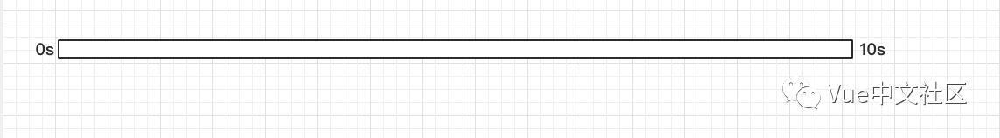
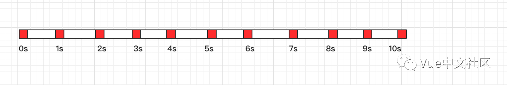

问题引入
问题1：
如果实现了dom拖拽功能，但是在绑定拖拽事件的时候发现每当元素稍微移动一点便触发了大量的回调函数，导致浏览器直接卡死，这个时候怎么办？
问题2：如果给一个按钮绑定了表单提交的post事件，但是用户有些时候在网络情况极差的情况下多次点击按钮造成表单重复提交，如何防止多次提交的发生？
问题引入
问题1：
如果实现了dom拖拽功能，但是在绑定拖拽事件的时候发现每当元素稍微移动一点便触发了大量的回调函数，导致浏览器直接卡死，这个时候怎么办？
问题2：如果给一个按钮绑定了表单提交的post事件，但是用户有些时候在网络情况极差的情况下多次点击按钮造成表单重复提交，如何防止多次提交的发生？
为了应对如上场景，便出现了函数防抖和函数节流两个概念，总的来说：
这两个方法是在时间轴上控制函数的执行次数。
概念： 在事件被触发n秒后再执行回调，如果在这n秒内又被触发，则重新计时。
生活中的实例：
如果有人进电梯（触发事件），那电梯将在10秒钟后出发（执行事件监听器），这时如果又有人进电梯了（在10秒内再次触发该事件），我们又得等10秒再出发（重新计时）。
概念： 规定一个单位时间，在这个单位时间内，只能有一次触发事件的回调函数执行，如果在同一个单位时间内某事件被触发多次，只有一次能生效。
生活中的实例： 我们知道目前的一种说法是当 1 秒内连续播放
24 张以上的图片时，在人眼的视觉中就会形成一个连贯的动画，所以在电影的播放（以前是，现在不知道）中基本是以每秒 24 张的速度播放的，为什么不 100 张或更多是因为 24 张就可以满足人类视觉需求的时候，100
张就会显得很浪费资源。
分析图
假设，我们观察的总时间为10秒钟，规定1秒作为一次事件的最小间隔时间。
如果触发事件的频率是 0.5s/次，那么
函数防抖如图

因为始终没法等一秒钟就被再次触发了，所以最终没有一次事件是成功的。
函数节流如图

因为控制了最多一秒一次，频率为0.5s/次，所以每一秒钟就有一次事件作废。最终控制成1s/次
如果触发事件的频率是 2s/次，那么
函数防抖如图
.png)
因为2s/次已经大于了规定的最小时间，所以每计时两秒便触发一次。
函数节流如图
同样，2s/次 大于了最小时间规定，所以每一次触发都生效。
应用场景
对于函数防抖，有以下几种应用场景：
给按钮加函数防抖防止表单多次提交。
对于输入框连续输入进行AJAX验证时，用函数防抖能有效减少请求次数。
判断scroll是否滑到底部，滚动事件+函数防抖
总的来说，适合多次事件一次响应的情况
对于函数节流，有如下几个场景：
游戏中的刷新率
DOM元素拖拽
Canvas画笔功能
总的来说，适合大量事件按时间做平均分配触发。
function debounce(fn, wait) {
var timer = null;
return function () {
var context = this
var args = arguments
if (timer) {
clearTimeout(timer);
timer = null;
}
timer = setTimeout(function () {
fn.apply(context, args)
}, wait)
}
}
var fn = function () {
console.log('boom')
}
setInterval(debounce(fn,500),1000) // 第一次在1500ms后触发，之后每1000ms触发一次
setInterval(debounce(fn,2000),1000) // 不会触发一次（我把函数防抖看出技能读条，如果读条没完成就用技能，便会失败而且重新读条）
之所以返回一个函数，因为防抖本身更像是一个函数修饰，所以就做了一次函数柯里化。里面也用到了闭包，闭包的变量是timer。
function throttle(fn, gapTime) {
let _lastTime = null;
return function () {
let _nowTime = + new Date()
if (_nowTime - _lastTime > gapTime || !_lastTime) {
fn();
_lastTime = _nowTime
}
}
}
let fn = ()=>{
console.log('boom')
}
setInterval(throttle(fn,1000),10)
如图是实现的一个简单的函数节流，结果是一秒打出一次boom
函数防抖和函数节流是在时间轴上控制函数的执行次数。防抖可以类比为电梯不断上乘客,节流可以看做幻灯片限制频率播放电影。
Github: JavaScript 函数节流和函数去抖应用场景辨析
SegmentFault：函数节流与函数防抖
Github:函数节流与函数防抖
作者：ACERY1
链接：http://taobaofed.org/blog/2016/08/12/optimized-react-components/